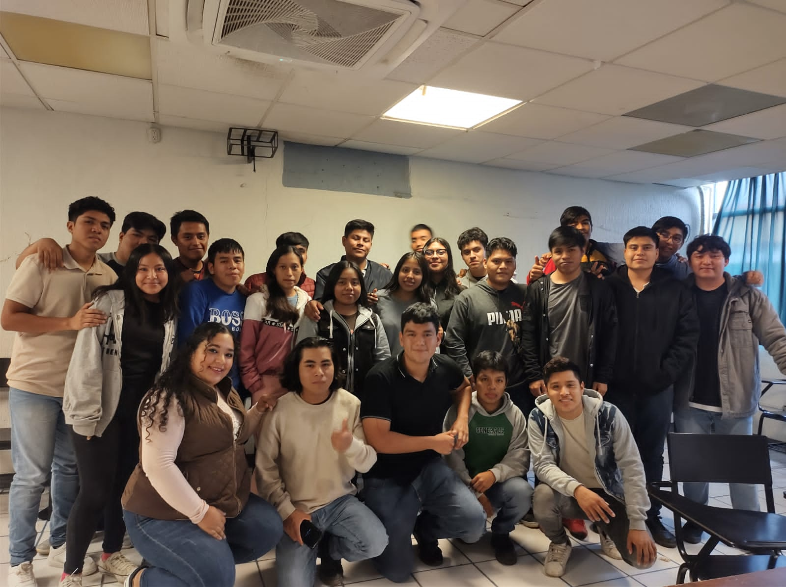
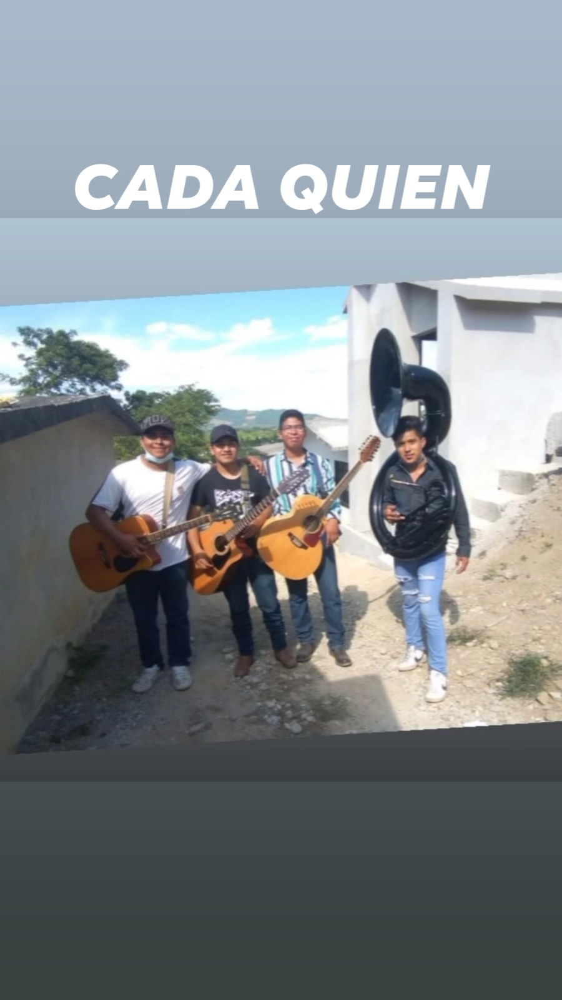

-
Faccebook: Gus Hz

Hernandez Hernandez
Te invito a visualizar lo que ofrece la escuela en donde me encuestro inscrito
Mi pasatiempo favorito es salir a rodar en motocicleta, visitar pueblitos, carreteras, y salir con mis amigos.
A continuacion me permito compartirles una foto junto con mis compañeros de la Universidad
Desde muy pequeño me ha gustado la musica, hoy en dia gracias a la practica,
al ensayo y a la perseverancia, eh desarrollado la habilidad de tocar la tuba,
siendo integrante de un sierrieño y banda. 
| HORA | LUNES | MARTES | MIERCOLES | JUEVES | VIERNES |
|---|---|---|---|---|---|
| 7:00-750 | Base de datos para Aplicaciones 3B - LAB 3 Ing.Gadiel Ramos Hernandez |
Base de datos para Aplicaciones 3B - LAB 3 Ing.Gadiel Ramos Hernandez |
Base de datos para Aplicaciones 3B - LAB 4 Ing.Gadiel Ramos Hernandez |
FILE I 3B - Salon K8 MGA. Hermes Salazar Casanova |
Base de datos para Aplicaciones 3B - LAB 4 Ing.Gadiel Ramos Hernandez |
| 7:50-8:40 | Formacion Sociocultural II 3B-Salon K8 Lic.Beatriz Hernandez Hernandez |
Base de datos para Aplicaciones 3B - LAB 4 Ing.Gadiel Ramos Hernandez |
Base de datos para Aplicaciones 3B - LAB 4 Ing.Gadiel Ramos Hernandez |
FILE 3B - Salon K8 MGA. Hermes Salazar Casanova |
Base de datos para Aplicaciones 3B - LAB 4 Ing.Gadiel Ramos Hernandez |
| 8:40-9:30 | Tutorías 3B-Salon K6 Lic.Beatriz Hernandez Hernandez |
Sistemas Operativos 3B- LAB 4 MTI. Jose De Jesus Gonzales Torres |
Ingles III 3B - Salon K7 Lic.Norma Hernandez Gamez |
Sistemas Operativos 3B- LAB 4 MTI. Jose De Jesus Gonzales Torres |
Ingles III 3B - Salon K7 Lic.Norma Hernandez Gamez |
| 9:30-10:20 | Tutorías 3B-Salon K6 Lic.Beatriz Hernandez Hernandez |
Sistemas Operativos 3B- LAB 4 MTI. Jose De Jesus Gonzales Torres |
Ingles III 3B - Salon K7 Lic.Norma Hernandez Gamez |
Sistemas Operativos 3B- LAB 4 MTI. Jose De Jesus Gonzales Torres |
Ingles III 3B - Salon K7 Lic.Norma Hernandez Gamez |
| 10:20-10:50 | R E C E S O |
||||
| 10:50-11:40 | Aplicaciones Web 3B - Lab 3 MTI. Luis Alberto Mendoza San Juan |
Probabilidad y Estadistica 3B-Salon K7 MA.Ricardo Garcia Morales |
Aplicaciones Web 3B - Lab 3 MTI. Luis Alberto Mendoza San Juan |
Probabilidad y Estadistica 3B-Salon K7 MA.Ricardo Garcia Morales |
Aplicaciones Web 3B - Lab 3 MTI. Luis Alberto Mendoza San Juan |
| 11:40 - 12-30 | Aplicaciones Web 3B - Lab 3 MTI. Luis Alberto Mendoza San Juan |
Probabilidad y Estadistica 3B-Salon K7 MA.Ricardo Garcia Morales |
Aplicaciones Web 3B - Lab 3 MTI. Luis Alberto Mendoza San Juan |
Probabilidad y Estadistica 3B-Salon K7 MA.Ricardo Garcia Morales |
Aplicaciones Web 3B - Lab 3 MTI. Luis Alberto Mendoza San Juan |
| 12:30 - 13:20 | FILE 3B - Salon K8 MGA. Hermes Salazar Casanova |
Calculo diferencial 3B - Salon K6 MSI.Yucels Anai del carmen Morales |
Probabilidad y Estadistica 3B-Salon K7 MA.Ricardo Garcia Morales |
Calculo diferencial 3B - Salon K6 MSI.Yucels Anai del carmen Morales |
Integradora 3B-Salon K6 Lic. Juan Carlos Martinez Magoz |
| 13:20-2:10 | FILE 3B - Salon K8 MGA. Hermes Salazar Casanova |
Calculo diferencial 3B - Salon K6 MSI.Yucels Anai del carmen Morales |
Sistemas Operativos 3B- LAB 4 MTI. Jose De Jesus Gonzales Torres |
Calculo diferencial 3B - Salon K6 MSI.Yucels Anai del carmen Morales |
Integradora 3B-Salon K6 Lic. Juan Carlos Martinez Magoz |
| Ingles III 3B - Salon K7 Lic.Norma Hernandez Gamez |
|||||
| Ingles III 3B - Salon K7 Lic.Norma Hernandez Gamez |
|||||